Image Repository Redesign
TL;DR Summary
Image repository in the Albertsons Merchandising Item-onboarding platform captures the item/product image assets along with the associated information required for publishing in omni channel platforms and item book keeping. This asset management section of the platform enables both merchandising and marketing teams to manage the image data with ease, initially launched as an MVP but after successful adoption by associates this shared pattern paved way for similar explorations in other sections of the product.
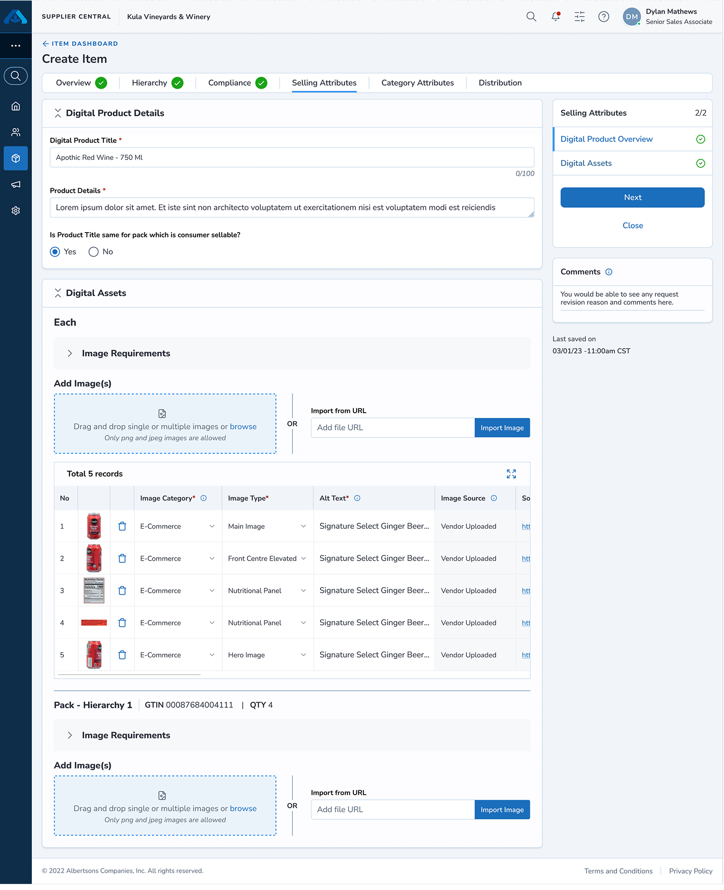
Result
The redesigned image repository addressed a hidden gap that served the purpose of two different business cases.
72%
Increase in user engagement
Problems
Before the redesign, the image repository captured product images and information based on each individual image(s) of a product for every supply chain hierarchy (Each - Pack - Case - Pallet).
The previous design was primarily made for book keeping and could not be scaled for business needs
User motivation for this feature was as low as 28%, leading to abandoning this process when setting up the item
More images means more Vertical Scroll
When vendors try to add more images manually, the card component stretches vertically below leading to vertical scroll. Merchants faced the same issue when reviewing the item image details.
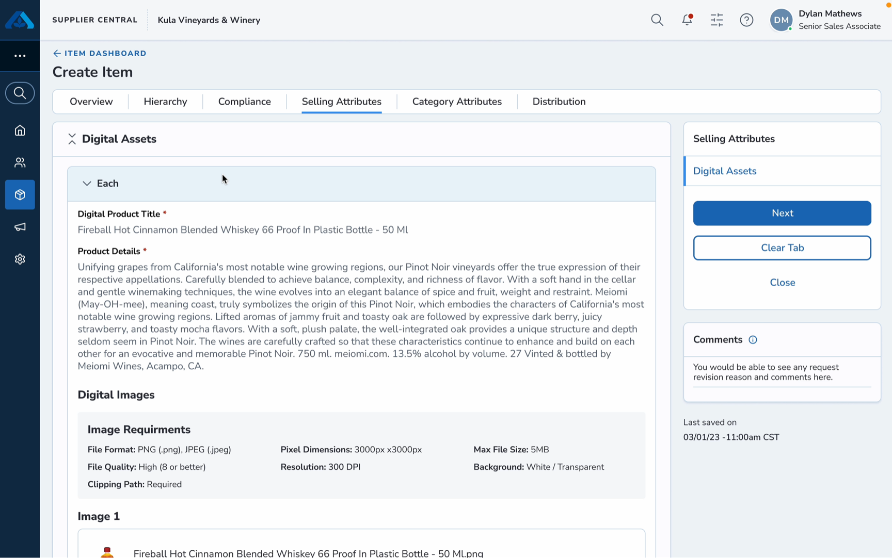
Disoriented image information
The image information tied to each hierarchy felt overwhelming when reviewing images present on the same card, creating disorientation between the main content and image type.
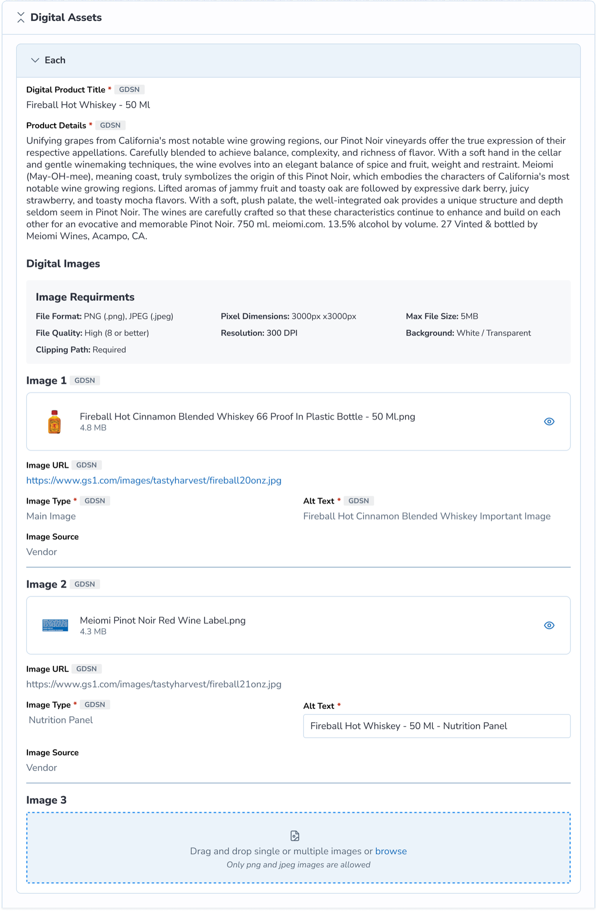
As a result, the merchandising team had inefficiencies in capturing item data.
Research
I studied how the product images are displayed across Albertsons e-commerce websites and identified a relatable pattern that could align with merchants and vendors.
- Images easy to identify — The product images can be seen easily through a gallery view.
- Separate portals to access images — The merchandising and marketing teams were communicating back and forth with vendors through different channels for image requirements
- Viewing images across all platforms is consistent — The images on mobile app, web app, and online commerce channels had a consistent flow of same images
Through active listening, I drafted elements required for image repository redesign and aligning them with user goals and strategic business needs
Design Solution
With the help of visual design hierarchy, I was able to create an experience that help users perform the task intuitively and bridge the business needs.
The new image repository design follows three principles,
- Scalability — Expand images across multiple channels.
- Glanceability — Represent images in a clear modular pattern for easy consumption.
- Progressive redcution — Breaking down the main component into smaller chunks
Restructured Layout
This decision is driven by two aspects, product details and image assets. This segmentation enables vendors to clearly add asset text information and assets separately.
Iterations
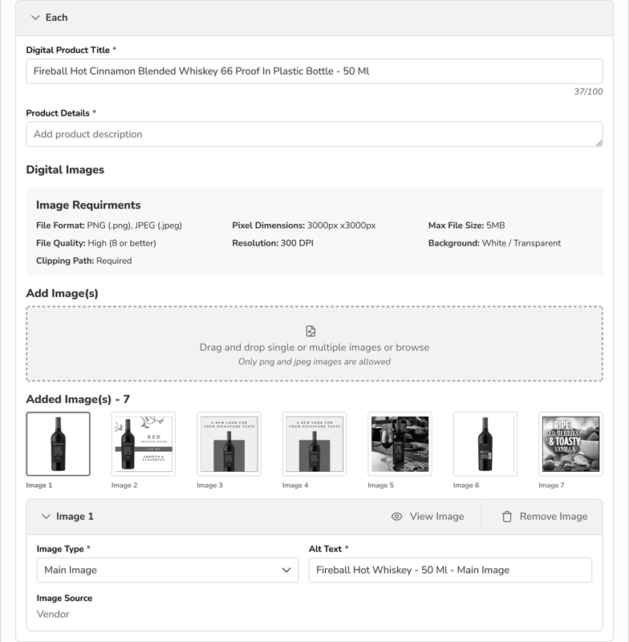
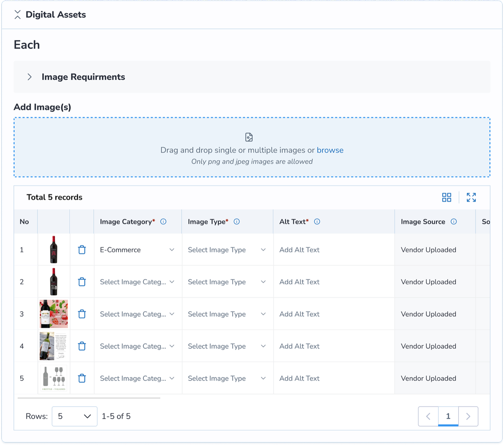
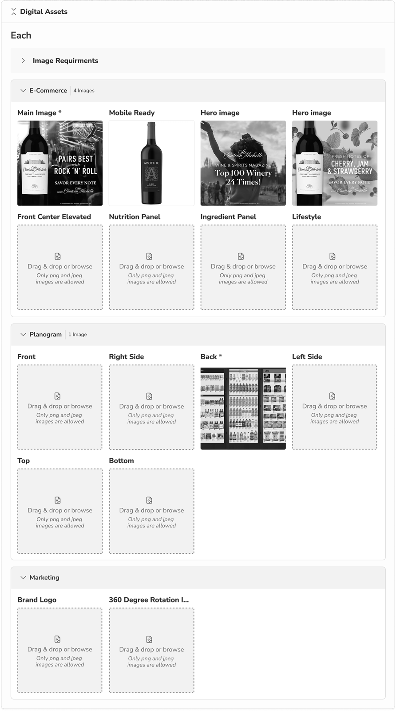
Final design
Component Segmentations
Scalable tables enabled vendors to categorize assets, add image type, and source which was widely accepted during user testing. Adding tables gave more asset visibility and accountability to vendors.
Product Detail Card
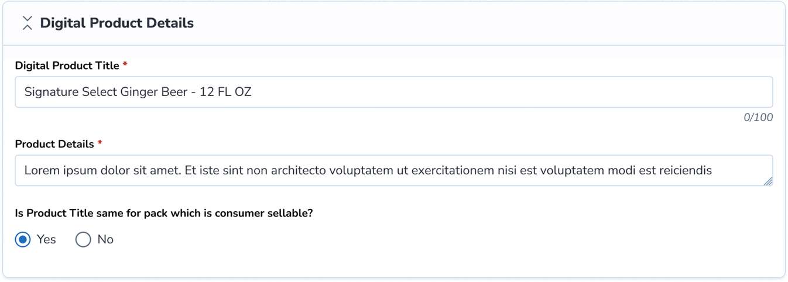
Image Asset Uploader
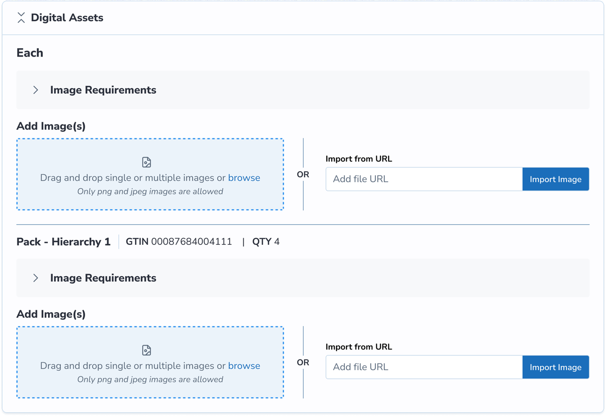
Image Asset Table
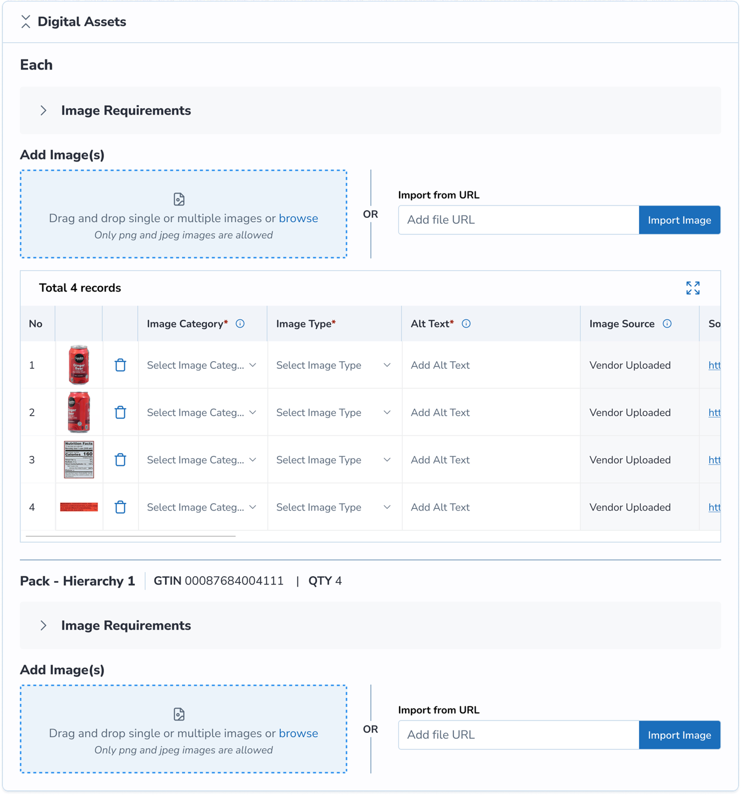
Image Viewer Modal to add detail or view enlarged image
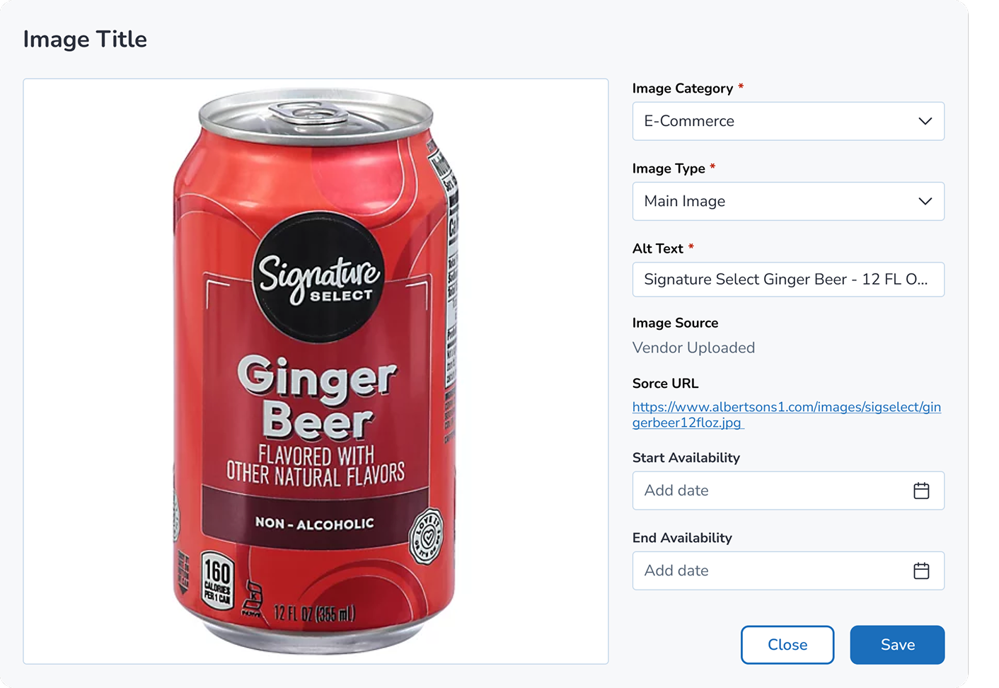
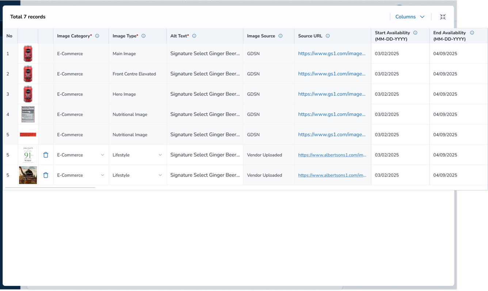
Shared Platform
The image assets collected through the Merchandising Item portal was shared indirectly to the marketing team through an integrated backend gateway developed in partnership with the engineering team that led to significant reduction in back and forth vendor-marketing team communication for assets.
AI Forward Design
An exploration was made around AI product title and description generator with a rich text editor format but the team pushed back on this stating vendors and merchants relied heavily on manufacturer or internal proprietary product description, and not trust over the LLM generated product description.
AI Title & Description Generator
A rich text editor explored generating product titles and descriptions with AI, surfaced as a suggestion alongside manufacturer-provided copy.
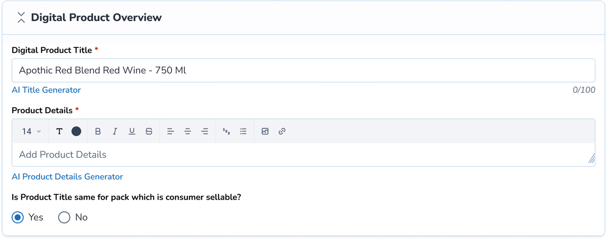
Next Step
Extended redesign to similar flows
This design purposed a new business use case and also reduced the visual load for an enhanced data collection. This redesign initiative led to explore similar flows that could benefit from cross-platform utilization across teams.